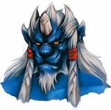

Nom: TIDUS
Age: 17 ans
Histoire: L'extraordinaire puissance de Sin précipite Tidus, champion de blitzball des "Zanarkand Abes", dans ce qui restera la plus grande aventure de sa vie. Sin l'emmène dans une conrtrée éloignée... une contrée tellement lointaine qu'aucun retour ne semble possible. Loin de chez lui et des siens, Tidus s'éprend de la magnifique Yuna tout en entrenant une haine envers son père Jecht(lui aussi une star de blitzball)...
Arme: Epée
Arme des 7 Astres Antiques: Ultima
Style de Combat: Combatant preste et agile, Tidus est particulièrement efficace contre les ennemis rapides. Il compense sa relative maladresse face aux adversaires aériens par son aptitude à combattre sous l'eau.
Nom: YUNA
Age: 17 ans
Histoire: Apprentie Invokeur, Yuna est aussi la fille de Braska, le célèbre Grand Invokeur. Ce dernier est mort dix ans auparavant, sacrifiant sa vie afin de vaincre le maléfique Sin. Les prières de Yuna dans le temple de Besaïd ont fait d'elle une véritable Invokeur: elle a désormais le pouvoir de faire appel aux Chimères. Le but de Yuna est de trouver l'Ultime Chimère pour éliminer Sin, un objectif qui lui fera parcourir les terres de Spira dans toute leur longueur.
Arme: Bâton
Arme des 7 Astres Antiques: Nirvana
Style de Combat: Yuna est un des personnages les plus faibles en terme de combat rapproché. Son point fort réside bien plus dans l'emploi de la Magie Blanche, une école de magie privilégiant les sorts de guérison. Yuna est aussi le seul personnage capable de faire appel aux Chimères: ces créatures ont la particularité de pouvoir remplacer l'équipe pendant un batille.
Nom: WAKKA
Age: 24 ans
Histoire: Wakka est le capitaine d'une équipe de blitzball en manque de réussite, les "Besaïd Aurochs": lui et ses partenaires n'ont jamais remporté le moindre match. Mais grâce à Tidus, cette longue série de malchance semble enfin termminée... Wakka fait partie des gardiens de Yuna; il souhaite se consacrer exclusivement à cette vocation après le Tournoi de blitzball de cette année.
Arme: Ballon
Arme des 7 Astres Antiques: World Champion
Style de Combat: Wakka possède une quantité élévée de HP. Ses attaques physiques sont plus puissantes que celles de Tidus, en partilier lorsqu'elles visent des ennemis distants ou aériens. Cela s'explique par le fait qu'il utilise comme arme un ballon de blitzball (y compris contre le sennemis sous-marins).
Nom: LULU
Age: 22 ans
Histoire: Lulu joue, elle aussi, le rôle de gardien de Yuna. A l'instar de Wakka, elle considère Yuna comme sa petite soeur. Experte dans les arcanes de la Magie Noire, Lulu dispose de sorts tous plus dangereux les uns que les autres. Son apparence calme et contrôlée peut parfois passer pour de la froideur, mais en réalité Lulu possède une nature à la fois sauvage et compréhensive.
Arme: Poupée
Arme des 7 Astres Antiques: Chevalier Oignon
Style de Combat: Physiquement; Lulu est peut-être le personnage le plus faible du groupe. Pourtant, il ne faut assurément pas la sou-estimer: sa force réide dans l'utilisation des nombreux sorts d'attaque de la Magie Noire. Lulu se sert de poupées qui devraient rappeler aux joueurs des figures récurrentes dans la série des Final Fantasy.


Nom: KIMAHRI
Age: 25 ans
Histoire: Membre de la tribu des Ronsos, Kimahri est un guerrier taciturne privilégiant l'action à la parole. Lui aussi gardien de Yuna, il veille sur elle depuis son plus jeune âge. A la mort de Braska, il l'emmena de Bevelle, où elle habité avec son père, à Besaïd où le temple les a receuillis.
Arme: Lance
Arme des 7 Astres Antiques: Longinus
Style de Combat: Kimahri se révèle être un des meilleurs combattants au corps à corps de l'équipe, uniquement devancé dans ce domaine par Auron. Il est parcontre dans l'incapacité de se battre sous l'eau. Il est aussi le seul qui peut apprendre certaines techniques des ennemis grâce au "Ryuken".

Nom: AURON
Age: 35 ans
Histoire: Auron est un gardien de légende ayant vaincu Sin dix ans auparavant aux cotés de Braska, le père de Yuna. Il se trouve avec Tidus lors de la destruction de Zanarkand: c'est d'ailleurs lui qui offre à Tidus sa première épée. Avare en paroles, Auron préfère laisser sa lame s'exprimer à sa place. Il se joint à l'équipe afin d'éliminer Sin, définitivement cette fois.
Arme: Glaive
Arme des 7 Astres Antiques: Masamune
Style de Combat: Bien qu'Auron soit un des guerriers les plus puissants de léquipe, il est marqué en contrepartie par une certaine lenteur et par l'incapacité de se battre sous l'eau. Ses lames ont presque toutes la capicité "Percer" qui transperce les armures robuste des ennemis.
Nom: RIKKU
Age: 15 ans
Histoire: Cette Al Bhede pleine d'énergie est la première personne que Tidus rencontre sur Spira. Contrairement à de nombreux Al Bheds, Rikku fait preuve d'une grande tendresse. Son père Cid, chef des Al Bheds est le frère de la mère de Yuna, elle sont donc cousine.
Arme: Gantelet
Arme des 7 Astres Antiques: God Hand
Style de Combat: S'il est vrai que les attaques physiques de Rikku n'ont rien d'extrordinaire, la jeune Al Bhede peut en revanche apprendre des compétences lui permettant de voler ses adversaires (capacité qui tue en un coup les ennemis mécaniques). Elle finira même par disposer de la compétence "Corruption", indispensable pour obtenir certains objets précieux.